State Year Temp Precip Fires AcresBurned
1 Arizona 2020 62.6 6.56 2524 978568
2 California 2020 60.5 12.07 10431 4092151
3 Colorado 2020 47.3 12.23 1080 625357
4 Idaho 2020 44.3 22.19 944 314352
5 Montana 2020 43.3 16.89 2433 369633
6 Nevada 2020 52.4 5.86 770 259275Predicting Wildfire Frequency and Severity from Temperature and Precipitation
1 Introduction
Wildfires are an increasingly important environmental issue in the United States, especially in western and southwestern states where fire risk is closely connected to climate, vegetation, drought, land management, and human activity. I chose this project because it connects statistics with conservation and environmental science, which are areas that I am interested in studying more closely.
The original motivation for this project was to examine whether annual average temperature and annual precipitation can help explain differences in wildfire activity across selected U.S. states. After collecting the data, I decided to define wildfire activity in two related but distinct ways. The first is wildfire severity, measured by annual acres burned. The second is wildfire frequency, measured by annual number of fires.
This distinction is important because a state can have many small fires without burning many acres, or it can have a smaller number of fires that burn a very large area. For that reason, this report uses two separate regression models: one for acres burned and one for wildfire counts.

The primary research question is:
Can annual average temperature and annual precipitation be used to predict annual wildfire severity, measured by acres burned?
The secondary research question is:
Can the same climate variables be used to predict annual wildfire frequency, measured by number of fires?
2 Data Collection
The data set used in this project contains annual climate and wildfire information for 10 U.S. states over a five-year period from 2020 through 2024. The selected states were Arizona, California, Colorado, Idaho, Montana, Nevada, New Mexico, Oregon, Texas, and Washington.
Temperature and precipitation data were obtained from NOAA’s Climate at a Glance tool. For each state, I downloaded annual average temperature and annual precipitation values. Wildfire data were obtained from annual wildfire statistics tables that reported the number of fires and acres burned by state and year. The original files were then combined into one data set for analysis in R.
This is an observational study because no treatments were assigned and no variables were controlled experimentally. Instead, the study uses existing state-level climate and wildfire data. Because the data were not collected through a randomized experiment, the results should be interpreted as associations rather than proof that temperature or precipitation directly caused changes in wildfire activity.
The 10 states were selected purposefully rather than randomly. I chose western and southwestern states where wildfire activity is common and where temperature and precipitation were expected to be relevant to fire patterns. This means the sample should not be treated as a random sample of all U.S. states.
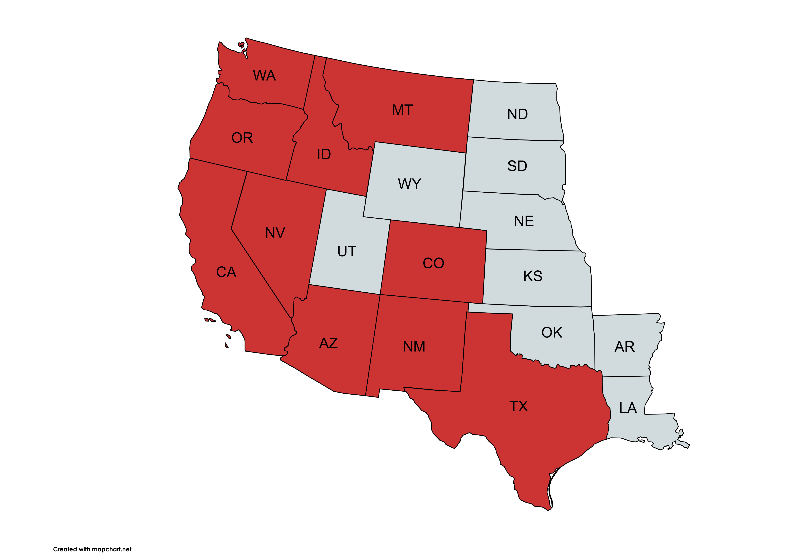
3 Variables
The variables used in the analysis were:
- State: U.S. state included in the data set.
- Year: Year of observation, from 2020 to 2024.
- Temp: Annual average temperature in degrees Fahrenheit.
- Precip: Annual precipitation in inches.
- Fires: Annual number of wildfires.
- AcresBurned: Annual number of acres burned by wildfires.
- LogFires: Natural log of annual number of wildfires.
- LogAcresBurned: Natural log of annual acres burned.
The two response variables are AcresBurned and Fires. Since both response variables are right-skewed, I also considered their natural-log transformations. A “+1” adjustment was not used because the minimum wildfire count and minimum acres burned were both greater than zero, so the natural log was defined for every observation.
4 Exploratory Data Analysis
The final data set contains 50 observations.
4.1 Summary Statistics
Temp Precip Fires AcresBurned
Min. :42.10 Min. : 5.86 Min. : 375.0 Min. : 1300
1st Qu.:47.15 1st Qu.:12.40 1st Qu.: 962.2 1st Qu.: 123885
Median :49.55 Median :18.67 Median : 1740.0 Median : 279291
Mean :52.79 Mean :20.51 Mean : 2762.3 Mean : 520830
3rd Qu.:60.33 3rd Qu.:27.08 3rd Qu.: 2405.5 3rd Qu.: 673616
Max. :68.60 Max. :45.25 Max. :12571.0 Max. :4092151 The summary statistics show that wildfire activity varied greatly across state-years. Annual wildfire counts ranged from 375 to 12,571 fires, while acres burned ranged from 1,300 to 4,092,151 acres. This wide range suggests that a small number of large wildfire seasons may have a strong influence on the analysis.
4.2 Graphical Summaries
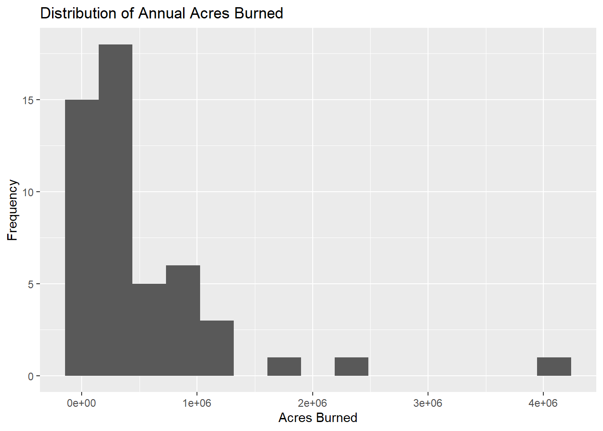
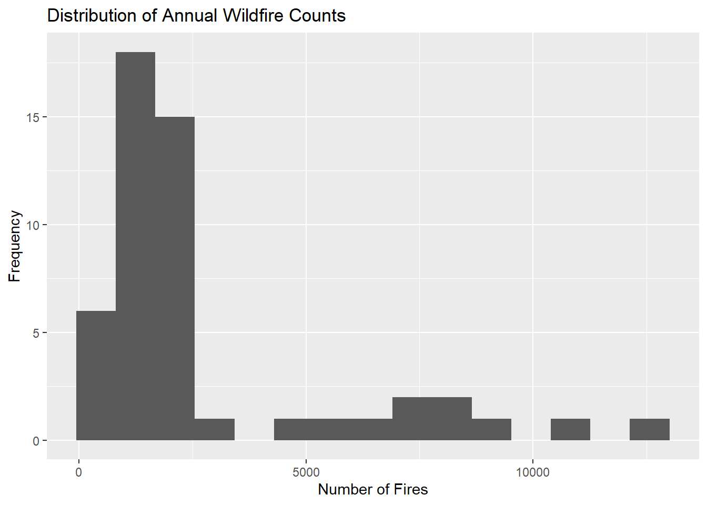
Both response variables are right-skewed. This is especially clear for acres burned, where a few state-years had far more acres burned than most others. Because multiple regression assumes approximately normal residuals and constant variance, this skewness motivates trying log-transformed response variables.
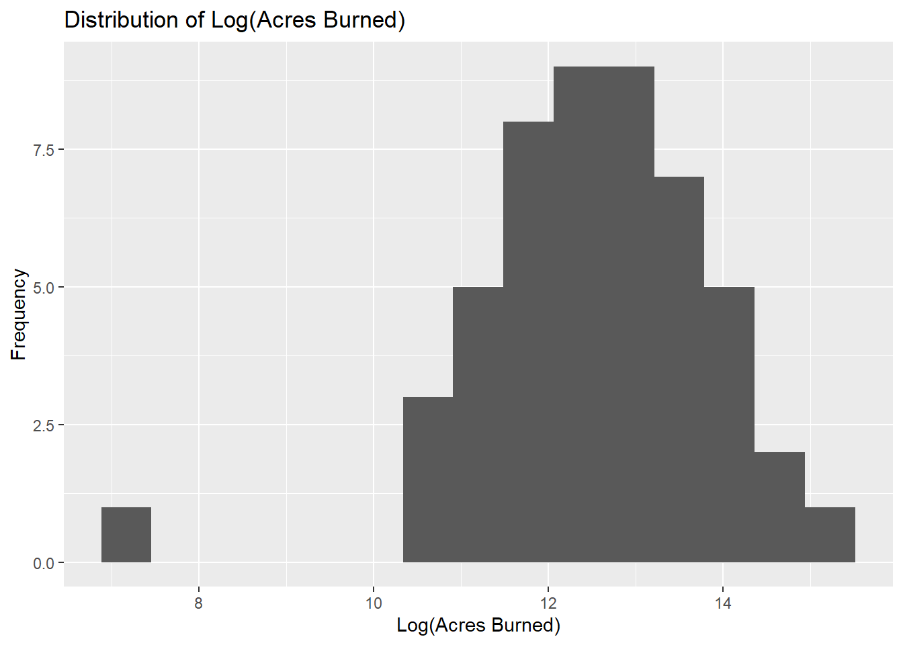
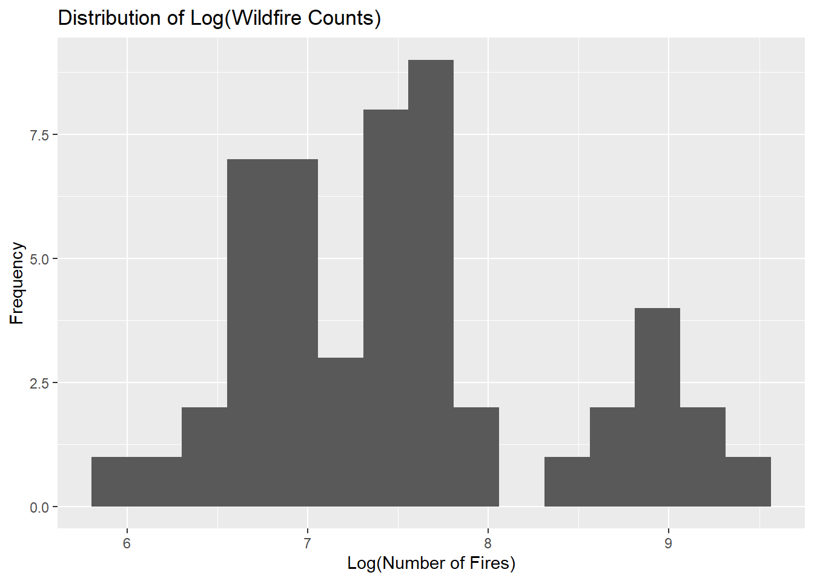
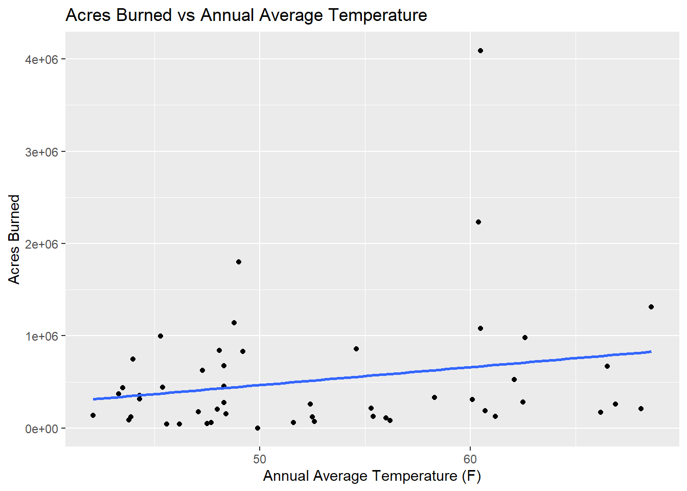
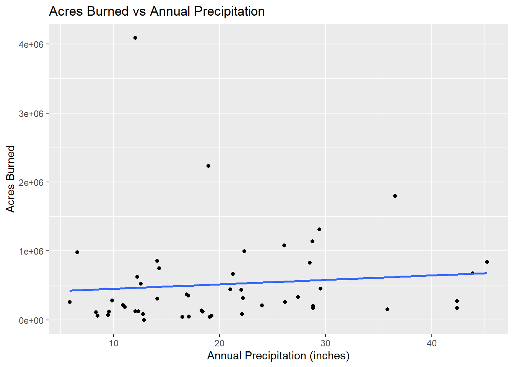
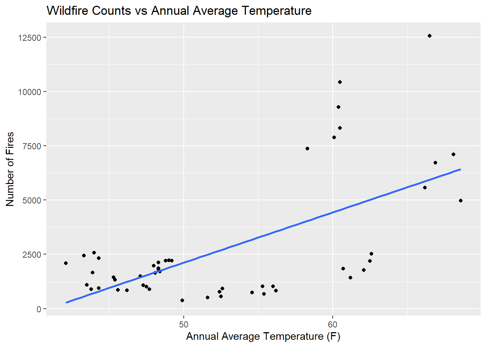
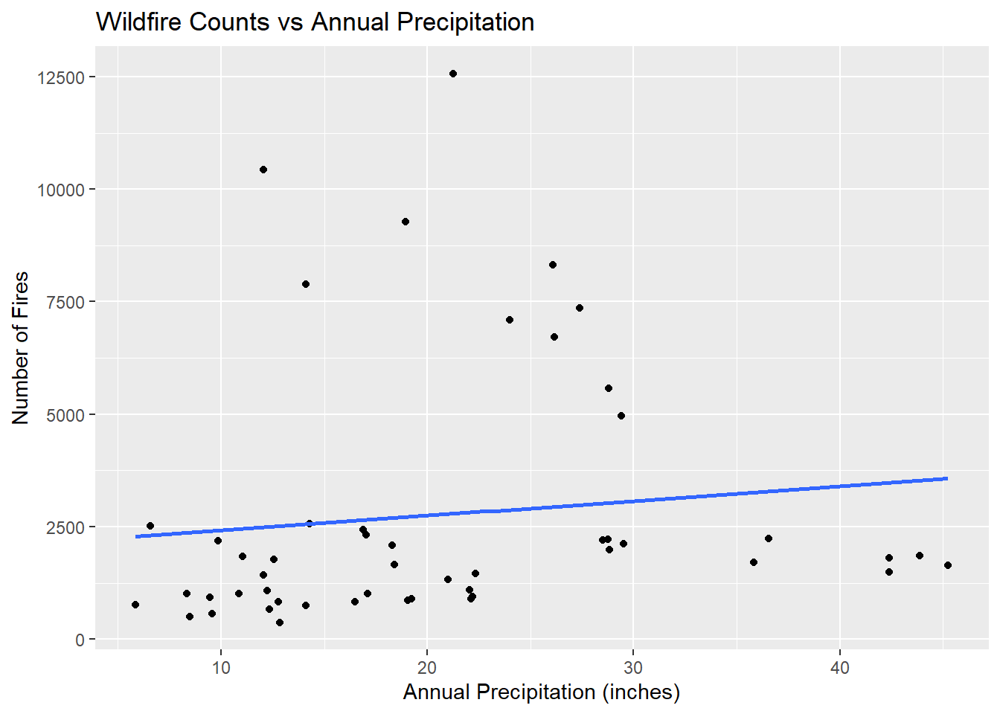
Temp Precip Fires AcresBurned LogFires LogAcresBurned
Temp 1.000 -0.179 0.622 0.217 0.565 0.204
Precip -0.179 1.000 0.116 0.094 0.274 0.265
Fires 0.622 0.116 1.000 0.527 0.923 0.457
AcresBurned 0.217 0.094 0.527 1.000 0.510 0.718
LogFires 0.565 0.274 0.923 0.510 1.000 0.600
LogAcresBurned 0.204 0.265 0.457 0.718 0.600 1.000Temperature shows a stronger correlation with log wildfire counts (r = 0.565) than with log acres burned (r = 0.204), suggesting that climate variables may be better predictors of wildfire frequency than severity.
5 Statistical Methods
The main statistical method used in this project is multiple linear regression. Because I considered two different response variables, I fit two separate regression models rather than trying to put both responses in one model.
Before using the log-transformed response variables, I first examined the raw response variables and fit untransformed regression models. The histograms and diagnostic plots suggested that both wildfire counts and acres burned were right-skewed, with a few unusually large fire seasons. For that reason, I used natural-log transformations for the main regression models. This transformation made the response variables more symmetric and helped the regression conditions become more reasonable.
The primary model for wildfire severity is:
\[ \log(AcresBurned) = \beta_0 + \beta_1(Temp) + \beta_2(Precip) + \epsilon \]
The secondary model for wildfire frequency is:
\[ \log(Fires) = \beta_0 + \beta_1(Temp) + \beta_2(Precip) + \epsilon \]
For each explanatory variable in each model, the hypotheses are:
\[ H_0: \beta_i = 0 \]
\[ H_A: \beta_i \ne 0 \]
The overall model is tested using the F-test from the regression output. This tests whether the model with temperature and precipitation explains significantly more variation in the response variable than a model with no explanatory variables.
Because both models use a log-transformed response, coefficients are interpreted approximately as percent changes. More exactly, for a one-unit increase in a predictor, the estimated percent change in the response is:
\[ 100(e^{\hat{\beta}} - 1) \]
6 Primary Regression Analysis: Wildfire Severity
The primary response variable is the natural log of acres burned. I used this transformed response because the raw acres-burned variable was strongly right-skewed, with a few very large fire seasons.
Code
log_acres_model <- lm(LogAcresBurned ~ Temp + Precip, data = wildfire)
summary(log_acres_model)
Call:
lm(formula = LogAcresBurned ~ Temp + Precip, data = wildfire)
Residuals:
Min 1Q Median 3Q Max
-4.8835 -0.8538 0.0577 0.8255 2.7316
Coefficients:
Estimate Std. Error t value Pr(>|t|)
(Intercept) 9.31172 1.37257 6.784 1.74e-08 ***
Temp 0.04448 0.02360 1.885 0.0657 .
Precip 0.04063 0.01797 2.261 0.0284 *
---
Signif. codes: 0 '***' 0.001 '**' 0.01 '*' 0.05 '.' 0.1 ' ' 1
Residual standard error: 1.257 on 47 degrees of freedom
Multiple R-squared: 0.1356, Adjusted R-squared: 0.09886
F-statistic: 3.688 on 2 and 47 DF, p-value: 0.032536.1 Interpretation of the Acres Burned Model
For the log acres burned model, the estimated regression equation is:
\[ \widehat{\log(AcresBurned)} = 9.312 + 0.044(Temp) + 0.041(Precip) \]
The model has an \(R^2\) of 0.136 and an adjusted \(R^2\) of 0.099. This means that temperature and precipitation together explain about 13.6% of the variation in log acres burned.
The overall F-test has a p-value of 0.0325. At the 0.05 significance level, this indicates that the model with temperature and precipitation explains a statistically significant amount of variation in log acres burned.
The estimated temperature coefficient is 0.0445. Interpreted on the original acres-burned scale, this means that, holding precipitation constant, a one-degree Fahrenheit increase in annual average temperature is associated with an estimated 4.5% increase in acres burned, on average. However, the temperature coefficient was not statistically significant at the 0.05 level because its p-value was 0.0657 and its confidence interval included 0.
The estimated precipitation coefficient is 0.0406. Interpreted on the original acres-burned scale, this means that, holding temperature constant, a one-inch increase in annual precipitation is associated with an estimated 4.1% increase in acres burned, on average. This coefficient was statistically significant at the 0.05 level.
Code
confint(log_acres_model) 2.5 % 97.5 %
(Intercept) 6.550464435 12.0729723
Temp -0.003002517 0.0919564
Precip 0.004482063 0.07677666.2 Multicollinearity Check for Acres Burned Model
Code
vif(log_acres_model) Temp Precip
1.033086 1.033086 The variance inflation factor values help determine whether temperature and precipitation are too strongly related to each other. The VIF values were both about 1.03, which suggests little concern about multicollinearity.
6.3 Diagnostic Plots for Acres Burned Model
The assumptions for multiple linear regression include:
- The relationship between predictors and response is approximately linear.
- The residuals have approximately constant variance.
- The residuals are approximately normally distributed.
- The observations are reasonably independent.
- There are no extreme influential points that dominate the model.
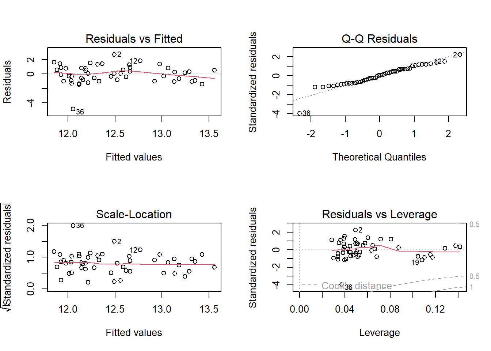
6.4 Diagnostic Interpretation for Acres Burned Model
The diagnostic plots for the log acres burned model suggest that the model is usable, but not perfect. The residuals vs fitted plot does not show a strong curved pattern, so the linearity condition appears reasonably met after the log transformation. The scale-location plot also suggests that the spread of residuals is fairly consistent across the fitted values, although there is still some unevenness.
The Q-Q plot shows some departure from normality, especially in the lower tail. This suggests that a few state-years had much lower acres burned than the model predicted. Because of this, conclusions from the acres burned model should be interpreted with some caution. The model provides evidence of an association between climate variables and acres burned, but the residual pattern suggests that acres burned is still not fully captured by a simple linear model using only temperature and precipitation.
The residuals vs leverage plot also identifies a few observations that may have some influence on the model, especially observation 36. However, no single point appears to dominate the model. Overall, the log transformation improved the usefulness of the acres burned model, but the diagnostic plots still show that wildfire severity is difficult to explain using only annual temperature and precipitation.
7 Secondary Regression Analysis: Wildfire Frequency
The secondary response variable is the natural log of annual wildfire counts. This model addresses whether temperature and precipitation help explain wildfire frequency rather than wildfire severity.
Code
log_fires_model <- lm(LogFires ~ Temp + Precip, data = wildfire)
summary(log_fires_model)
Call:
lm(formula = LogFires ~ Temp + Precip, data = wildfire)
Residuals:
Min 1Q Median 3Q Max
-1.1479 -0.4284 -0.1282 0.1832 1.4611
Coefficients:
Estimate Std. Error t value Pr(>|t|)
(Intercept) 3.162089 0.696929 4.537 3.94e-05 ***
Temp 0.070026 0.011984 5.843 4.64e-07 ***
Precip 0.032542 0.009123 3.567 0.000844 ***
---
Signif. codes: 0 '***' 0.001 '**' 0.01 '*' 0.05 '.' 0.1 ' ' 1
Residual standard error: 0.6385 on 47 degrees of freedom
Multiple R-squared: 0.4642, Adjusted R-squared: 0.4414
F-statistic: 20.36 on 2 and 47 DF, p-value: 4.289e-077.1 Interpretation of the Wildfire Count Model
For the log wildfire count model, the estimated regression equation is:
\[ \widehat{\log(Fires)} = 3.162 + 0.070(Temp) + 0.033(Precip) \]
The model has an \(R^2\) of 0.464 and an adjusted \(R^2\) of 0.441. This means that temperature and precipitation together explain about 46.4% of the variation in log wildfire counts.
The overall F-test has a p-value of \(4.29 \times 10^{-7}\). At the 0.05 significance level, this indicates that the model with temperature and precipitation explains a statistically significant amount of variation in log wildfire counts.
The estimated temperature coefficient is 0.0700. Interpreted on the original wildfire-count scale, this means that, holding precipitation constant, a one-degree Fahrenheit increase in annual average temperature is associated with an estimated 7.3% increase in number of fires, on average.
The estimated precipitation coefficient is 0.0325. Interpreted on the original wildfire-count scale, this means that, holding temperature constant, a one-inch increase in annual precipitation is associated with an estimated 3.3% increase in number of fires, on average.
Code
confint(log_fires_model) 2.5 % 97.5 %
(Intercept) 1.76004832 4.56412892
Temp 0.04591771 0.09413357
Precip 0.01418825 0.050896167.2 Multicollinearity Check for Wildfire Count Model
Code
vif(log_fires_model) Temp Precip
1.033086 1.033086 The VIF values were both about 1.03, which suggests little concern about multicollinearity in the wildfire count model.
7.3 Diagnostic Plots for Wildfire Count Model
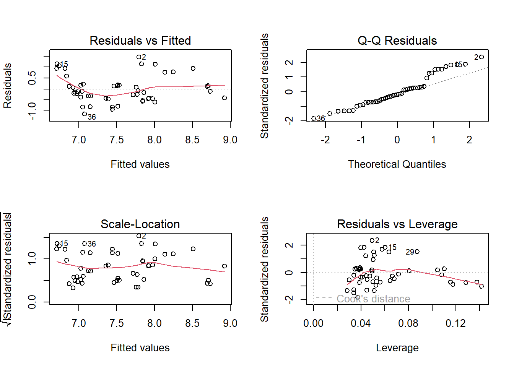
7.4 Diagnostic Interpretation for Wildfire Count Model
The diagnostic plots for the log wildfire count model look somewhat better than the acres burned model. The residuals vs fitted plot shows a slight pattern, but the residuals are mostly scattered around zero without a severe curve. The scale-location plot suggests that the residual spread is reasonably stable, though not perfectly constant.
The Q-Q plot is reasonably close to a straight line through most of the distribution, with some deviation at the ends. This means the normality condition is not perfect, but it is reasonable enough for this project. The residuals vs leverage plot shows a few labeled observations, but none appear to have extremely large Cook’s distance. Overall, the log wildfire count model satisfies the regression conditions more convincingly than the log acres burned model.
8 Comparison of the Two Models
The two models answer related but different questions. Acres burned measures wildfire severity, while number of fires measures wildfire frequency. Comparing the models helps show whether temperature and precipitation are better at explaining how many fires occur or how much land burns.
Model R_squared Adjusted_R_squared Overall_F_p_value
1 Log Acres Burned 0.1356 0.0989 3.25e-02
2 Log Fires 0.4642 0.4414 4.29e-07
Temp_Coefficient Precip_Coefficient
1 0.0445 0.0406
2 0.0700 0.0325The two models produced different levels of explanatory power. The log acres burned model had an \(R^2\) of 0.136 and an adjusted \(R^2\) of 0.099, meaning that temperature and precipitation explained about 13.6% of the variation in log acres burned. The overall F-test for this model was significant with a p-value of 0.0325, so the model does provide some evidence that the climate variables are related to wildfire severity. However, the relationship was fairly weak.
The log wildfire count model was stronger. It had an \(R^2\) of 0.464 and an adjusted \(R^2\) of 0.441, meaning that temperature and precipitation explained about 46.4% of the variation in log wildfire counts. The overall F-test was highly significant, with a p-value less than 0.001.
The individual predictors also differed between the models. In the log acres burned model, precipitation was statistically significant at the 0.05 level, while temperature was close to significant but did not quite reach the 0.05 level. In the log wildfire count model, both temperature and precipitation were statistically significant. Overall, temperature and precipitation were better at explaining wildfire frequency than wildfire severity in this data set.
9 Results and Discussion
Overall, the results suggest that annual temperature and precipitation are associated with wildfire activity, but the strength of the relationship depends on how wildfire activity is measured. When wildfire activity was measured as acres burned, the model was statistically significant but explained only a modest amount of variation. This suggests that temperature and precipitation alone are not enough to explain wildfire severity. This makes sense because acres burned can be strongly affected by factors not included in the model, such as wind, fuel availability, drought history, ignition source, fire suppression, and the timing of storms.
The wildfire count model was stronger. In that model, both temperature and precipitation were statistically significant predictors of annual wildfire counts. Holding precipitation constant, a one-degree Fahrenheit increase in annual average temperature was associated with an estimated 7.3% increase in the number of fires. Holding temperature constant, a one-inch increase in annual precipitation was associated with an estimated 3.3% increase in the number of fires.
The positive coefficient for temperature matched my original expectation: hotter years tended to be associated with more wildfire activity. However, the positive coefficient for precipitation did not match my original prediction. I originally expected precipitation to be negatively associated with wildfire activity because wetter conditions might reduce fire risk. Instead, in this data set, greater annual precipitation was associated with more fires and more acres burned. One possible explanation is that precipitation can increase vegetation growth, creating more fuel that can burn later in the season or in future dry periods.
10 Limitations
This study has several limitations. First, it is observational, so the regression results show association rather than causation. Second, only 10 states and five years were included, so the sample may not represent the entire United States. Third, wildfire activity is influenced by many variables that were not included in the model, such as drought, wind, vegetation type, human ignition, lightning, land management, fuel moisture, and firefighting resources. Fourth, state-level averages are broad and may hide important local variation within each state.
Another limitation is that the selected years may include unusual wildfire seasons, especially if a single state-year had an extremely large fire season. These influential observations can affect regression results, especially for acres burned. Finally, annual precipitation may have a complicated relationship with wildfire activity. More precipitation can reduce dryness in the short term but can also increase vegetation growth, which may provide more fuel in later fire seasons.
11 Surprises Encountered
The most surprising result was the positive relationship between precipitation and wildfire activity. I originally expected higher precipitation to be associated with fewer fires and fewer acres burned. However, both regression models estimated positive precipitation coefficients. This does not necessarily mean that precipitation directly causes fires. Instead, it may show that the relationship between precipitation and wildfire activity is more complicated than I expected. Wet periods can increase plant growth, and that added vegetation may later become fuel. Another surprise was that wildfire counts were easier to model than acres burned. I expected acres burned to be closely related to climate, but the results suggest that wildfire severity depends on many additional factors beyond annual temperature and precipitation.
12 What I Would Do Differently
If I repeated this study, I would collect a larger data set with more years and possibly all 50 states. I would also include additional climate variables such as drought index, wind, humidity, fuel moisture, and previous-year precipitation. A more detailed analysis could use county-level data or ecological regions rather than state-level averages. This would better reflect the fact that wildfire conditions can vary greatly within a single state.
13 Conclusion
The purpose of this study was to examine whether annual average temperature and annual precipitation could help predict wildfire activity across 10 selected U.S. states from 2020 to 2024. I analyzed wildfire activity using two response variables: acres burned as a measure of wildfire severity and number of fires as a measure of wildfire frequency.
The results showed that temperature and precipitation were statistically related to both measures of wildfire activity, but they explained wildfire frequency better than wildfire severity. The log acres burned model was statistically significant but had a relatively low \(R^2\), while the log wildfire count model explained a much larger portion of variation in wildfire counts. These results suggest that annual climate variables are useful for understanding wildfire patterns, but they cannot fully explain wildfire outcomes by themselves. Wildfire activity is shaped by many interacting factors, including climate, fuel availability, drought history, ignition sources, wind, and land management.
14 Appendix: Full R Code
Code
# Load packages
library(ggplot2)
library(dplyr)
library(car)
# Load data
wildfire <- read.csv("wildfire_dataset.csv")
# Convert variables
wildfire$State <- as.factor(wildfire$State)
wildfire$Year <- as.factor(wildfire$Year)
# Create log-transformed response variables
wildfire$LogFires <- log(wildfire$Fires)
wildfire$LogAcresBurned <- log(wildfire$AcresBurned)
# Fit raw models
raw_acres_model <- lm(AcresBurned ~ Temp + Precip, data = wildfire)
raw_fires_model <- lm(Fires ~ Temp + Precip, data = wildfire)
# Fit log-transformed models
log_acres_model <- lm(LogAcresBurned ~ Temp + Precip, data = wildfire)
log_fires_model <- lm(LogFires ~ Temp + Precip, data = wildfire)
# Summary statistics
summary(wildfire[, c("Temp", "Precip", "Fires", "AcresBurned")])
# Histograms
ggplot(wildfire, aes(x = AcresBurned)) +
geom_histogram(bins = 15) +
labs(title = "Distribution of Annual Acres Burned",
x = "Acres Burned",
y = "Frequency")
ggplot(wildfire, aes(x = Fires)) +
geom_histogram(bins = 15) +
labs(title = "Distribution of Annual Wildfire Counts",
x = "Number of Fires",
y = "Frequency")
ggplot(wildfire, aes(x = LogAcresBurned)) +
geom_histogram(bins = 15) +
labs(title = "Distribution of Log(Acres Burned)",
x = "Log(Acres Burned)",
y = "Frequency")
ggplot(wildfire, aes(x = LogFires)) +
geom_histogram(bins = 15) +
labs(title = "Distribution of Log(Wildfire Counts)",
x = "Log(Number of Fires)",
y = "Frequency")
# Scatterplots for acres burned
ggplot(wildfire, aes(x = Temp, y = AcresBurned)) +
geom_point() +
geom_smooth(method = "lm", se = FALSE) +
labs(title = "Acres Burned vs Annual Average Temperature",
x = "Annual Average Temperature (F)",
y = "Acres Burned")
ggplot(wildfire, aes(x = Precip, y = AcresBurned)) +
geom_point() +
geom_smooth(method = "lm", se = FALSE) +
labs(title = "Acres Burned vs Annual Precipitation",
x = "Annual Precipitation (inches)",
y = "Acres Burned")
# Scatterplots for wildfire counts
ggplot(wildfire, aes(x = Temp, y = Fires)) +
geom_point() +
geom_smooth(method = "lm", se = FALSE) +
labs(title = "Wildfire Counts vs Annual Average Temperature",
x = "Annual Average Temperature (F)",
y = "Number of Fires")
ggplot(wildfire, aes(x = Precip, y = Fires)) +
geom_point() +
geom_smooth(method = "lm", se = FALSE) +
labs(title = "Wildfire Counts vs Annual Precipitation",
x = "Annual Precipitation (inches)",
y = "Number of Fires")
# Correlations
round(cor(wildfire[, c("Temp", "Precip", "Fires", "AcresBurned",
"LogFires", "LogAcresBurned")]), 3)
# Primary model: log acres burned
summary(log_acres_model)
confint(log_acres_model)
vif(log_acres_model)
par(mfrow = c(2, 2))
plot(log_acres_model)
par(mfrow = c(1, 1))
# Secondary model: log wildfire counts
summary(log_fires_model)
confint(log_fires_model)
vif(log_fires_model)
par(mfrow = c(2, 2))
plot(log_fires_model)
par(mfrow = c(1, 1))
# Model comparison
comparison <- data.frame(
Model = c("Log Acres Burned", "Log Fires"),
R_squared = c(summary(log_acres_model)$r.squared, summary(log_fires_model)$r.squared),
Adjusted_R_squared = c(summary(log_acres_model)$adj.r.squared, summary(log_fires_model)$adj.r.squared),
Overall_F_p_value = c(
pf(summary(log_acres_model)$fstatistic[1],
summary(log_acres_model)$fstatistic[2],
summary(log_acres_model)$fstatistic[3],
lower.tail = FALSE),
pf(summary(log_fires_model)$fstatistic[1],
summary(log_fires_model)$fstatistic[2],
summary(log_fires_model)$fstatistic[3],
lower.tail = FALSE)
),
Temp_Coefficient = c(coef(log_acres_model)["Temp"], coef(log_fires_model)["Temp"]),
Precip_Coefficient = c(coef(log_acres_model)["Precip"], coef(log_fires_model)["Precip"])
)
comparison